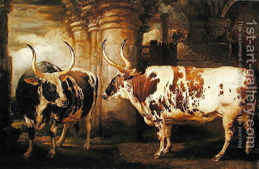

Bava Kamma 33 - Damages in Fighting

If two oxen not previously warned for goring fought and injured one another, then the owner of the less-damaged one pays the other owner half the difference in damages.
If the owners of both were warned that the oxen have gored three times, one pays for the excess full damages.
If one ox was innocent and another one warned, then if the damage done by the warned one is greater, the owner pays for the excess full damages. If the damage done by the innocent one is greater, the owner pays for the excess half damages.
Similarly, if two people injured one another, they pay for the excess full damages.